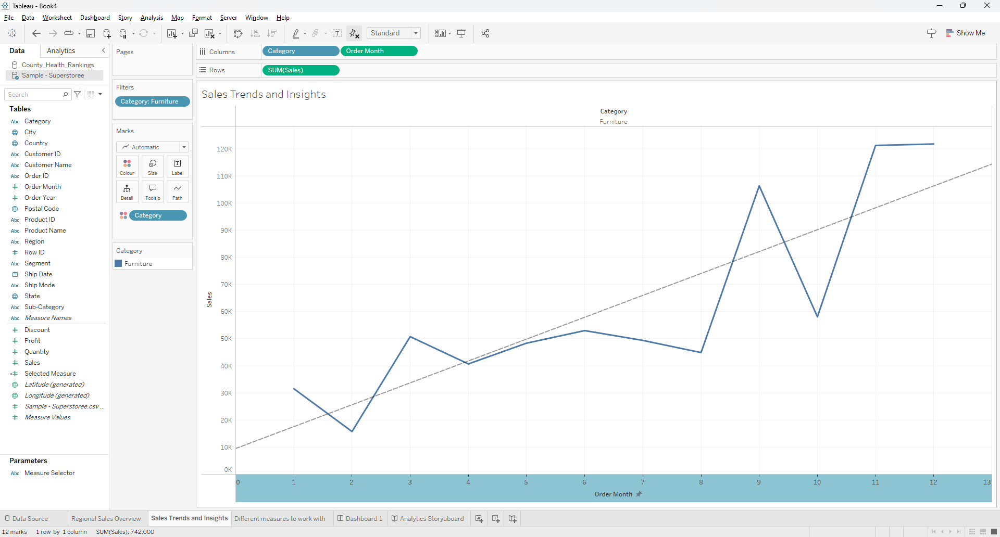
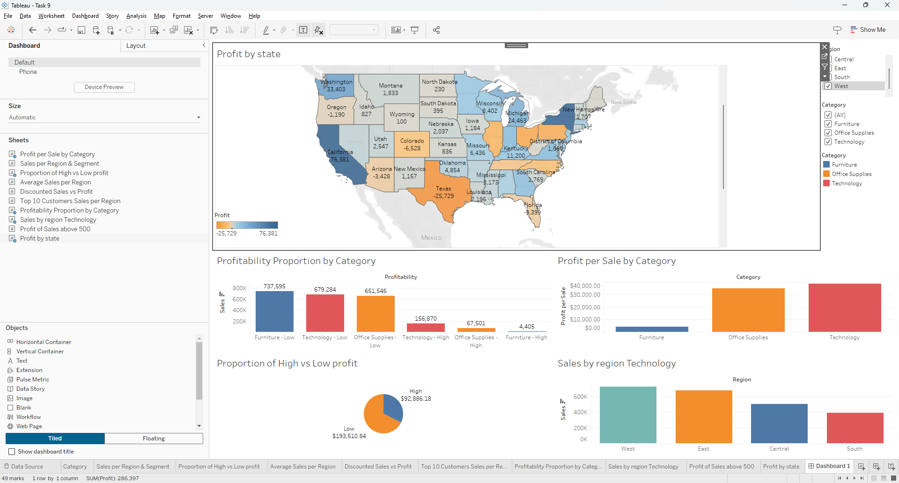
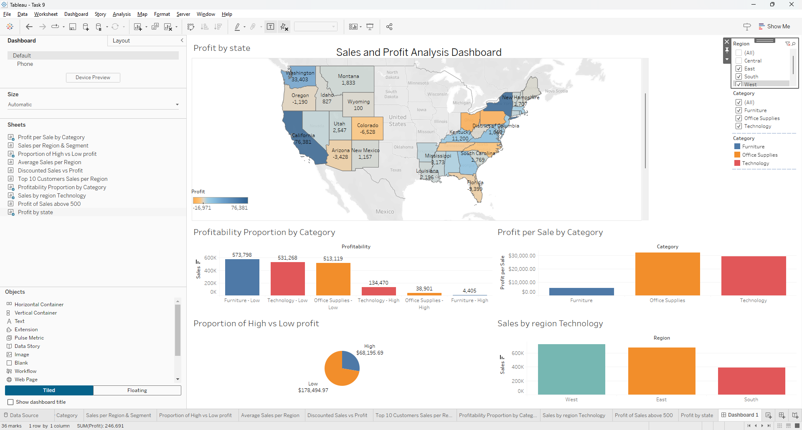
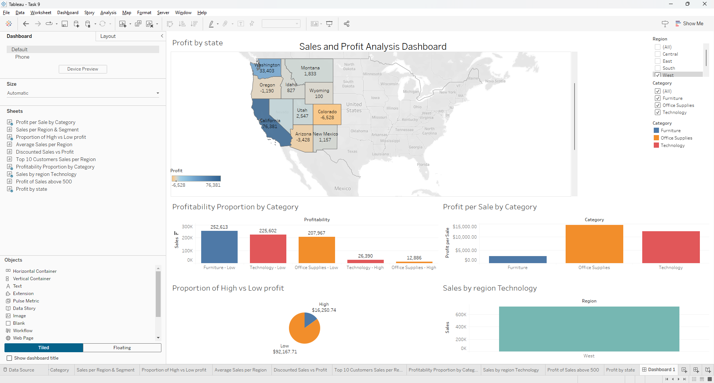
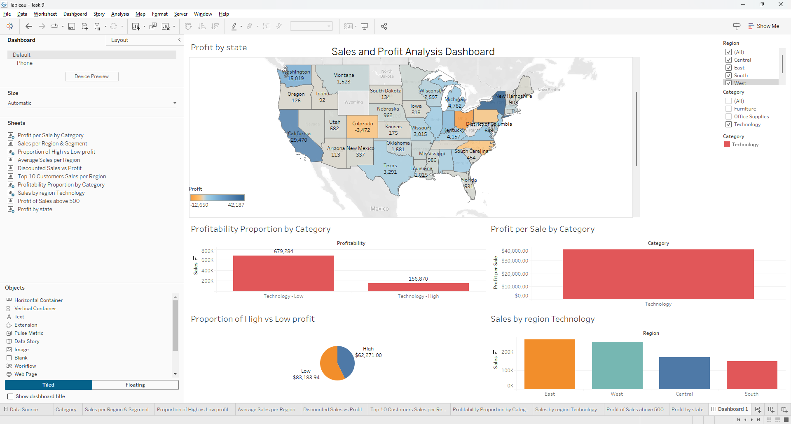

Overview
This project used Tableau dashboards, calculated fields, dashboard actions, and category-specific filtering to build a clearer BI view of the dataset. It combined overview views with targeted drill-downs, including a Technology-only analysis state.
Tableau Calculated Fields Filters Dashboard Actions Tableau Public
Approach
- Built regional sales, trend, category, and state-level profitability visuals.
- Created calculated fields such as Profit per Sale, Discounted Sales, High Profit, Customer Region, and Profitability.
- Added category filters and drill-down interactions so charts updated based on user input.
- Used a Technology-only view to narrow analysis to one category and compare regional performance.
Key Findings
- Technology consistently appeared strongest on profit-related measures.
- Furniture showed weaker profitability, making it the clearest underperforming category in the report.
- Regional and category filters helped move from broad sales overviews to more focused diagnostic views.
Decision Implications
- Technology is the clearest candidate for protection and growth because it remains strong when the view shifts from headline sales to profit-oriented measures.
- Furniture should trigger a margin review. The weaker profitability suggests a problem with pricing, discounting, or cost-to-serve.
- The regional filters matter because they stop category decisions from becoming too broad. A profitable category overall can still be uneven by region.
- The dashboard is most useful as a KPI monitoring tool: it helps move from "what sold" to "where are returns strongest, and where is performance starting to slip?"





Metrics and Evidence
78.75Technology average profit
22,638.48Highest sale in Technology
4Main regions analysed
1Technology-only filtered dashboard state
Business Value
The Tableau version is the strongest BI piece in the report because it supports category, region, and profitability review in a way that is closer to operational KPI tracking. The next question becomes what needs intervention and where performance is beginning to slip.